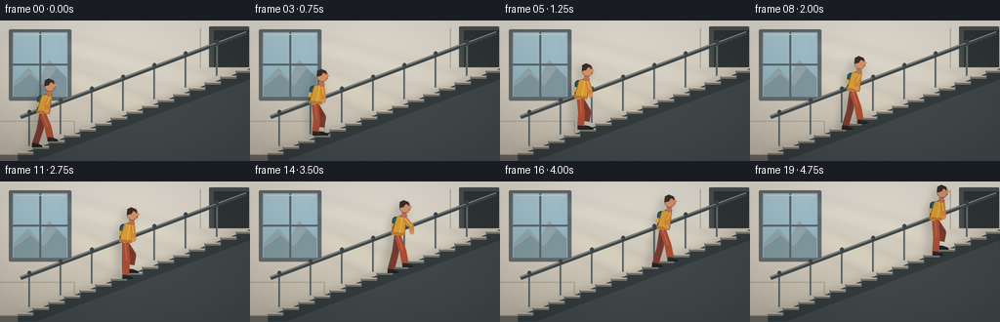
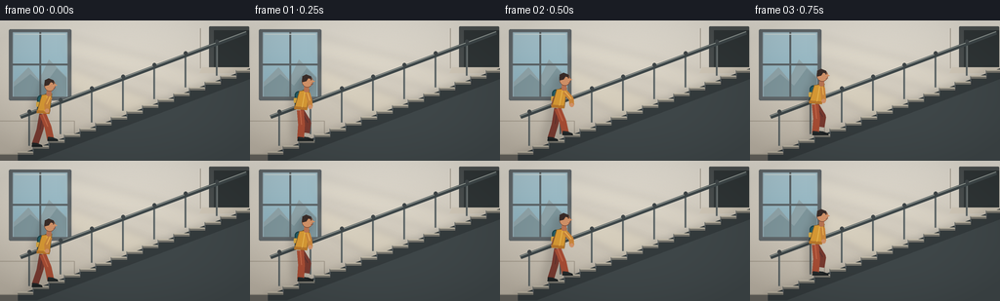

CODING AGENTS AS PIXEL WORLD MODELS
traex/GPT-5.6-Sol · motion_rationality_0034
点击播放 · 原生 RGB 像素
逐轮保存的候选
回放视频、检查图与代码变化。
每份候选均可单独播放。实际图片检查记录在下方工具轨迹中。
候选 01播放与检查图
点击播放 · 原生 RGB 像素


展开代码变化
--- 上一保存版本
+++ 本次保存版本
@@ -0,0 +1,235 @@
+from pathlib import Path
+import math
+import numpy as np
+from PIL import Image, ImageDraw, ImageFilter
+import artifact_io
+
+# Text-to-video illustration: a coherent side-view stair-climbing cycle.
+W, H, N, FPS = 256, 144, 20, 4
+S = 4
+WW, HH = W*S, H*S
+rng = np.random.default_rng(34)
+
+
+def P(points):
+ return [(int(round(x*S)), int(round(y*S))) for x, y in points]
+
+def box(b):
+ return tuple(int(round(v*S)) for v in b)
+
+def line(d, pts, fill, width=1, joint="curve"):
+ d.line(P(pts), fill=fill, width=max(1, int(width*S)), joint=joint)
+
+def poly(d, pts, fill, outline=None, width=1):
+ d.polygon(P(pts), fill=fill)
+ if outline:
+ d.line(P(list(pts)+[pts[0]]), fill=outline, width=max(1,int(width*S)), joint="curve")
+
+def ellipse(d, b, fill, outline=None, width=1):
+ d.ellipse(box(b), fill=fill, outline=outline, width=max(1,int(width*S)))
+
+def rounded(d, b, r, fill, outline=None, width=1):
+ d.rounded_rectangle(box(b), radius=int(r*S), fill=fill, outline=outline, width=max(1,int(width*S)))
+
+
+def stair_y(x):
+ # Exact horizontal walking surface under a given x.
+ k = math.floor((x - 18) / 16)
+ return 135 - 6 * max(0, min(14, k))
+
+
+def make_background():
+ # Warm stairwell with a cool window and directional daylight.
+ y = np.arange(HH)[:,None,None] / max(1, HH-1)
+ top = np.array([231,226,215], dtype=float)[None,None,:]
+ bot = np.array([190,181,166], dtype=float)[None,None,:]
+ arr = top*(1-y) + bot*y
+ arr = np.repeat(arr, WW, axis=1)
+ # Fine, deterministic plaster grain.
+ grain = rng.normal(0, 1.25, (HH,WW,1))
+ arr = np.clip(arr + grain, 0, 255).astype(np.uint8)
+ im = Image.fromarray(arr, 'RGB')
+ d = ImageDraw.Draw(im)
+
+ # Recessed window, cool enough to separate the warm interior.
+ rounded(d, (9,9,73,82), 1.5, '#636a6d')
+ rounded(d, (13,12,69,78), 0.5, '#9bb4bd')
+ # sky gradient panes
+ for yy in range(13*S,78*S):
+ q=(yy/S-13)/65
+ c=(int(174-35*q),int(204-27*q),int(214-24*q))
+ ImageDraw.Draw(im).line([(14*S,yy),(68*S,yy)], fill=c, width=1)
+ d=ImageDraw.Draw(im)
+ # distant vague architecture behind the glass
+ poly(d, [(14,63),(29,48),(40,61),(50,40),(68,58),(68,78),(14,78)], '#93a8ad')
+ poly(d, [(14,68),(31,55),(45,67),(58,49),(68,59),(68,78),(14,78)], '#81999f')
+ line(d, [(41,12),(41,78)], '#5e6669', 2.1)
+ line(d, [(13,45),(69,45)], '#5e6669', 2.1)
+ line(d, [(15,14),(67,14)], '#cbd9d9', 1)
+
+ # Soft cast beams from the window.
+ light = Image.new('RGBA',(WW,HH),(0,0,0,0)); ld=ImageDraw.Draw(light)
+ poly(ld, [(69,46),(195,96),(170,121),(69,70)], (255,241,194,30))
+ poly(ld, [(66,15),(222,57),(210,77),(66,37)], (255,247,219,22))
+ light=light.filter(ImageFilter.GaussianBlur(4*S))
+ im=Image.alpha_composite(im.convert('RGBA'), light).convert('RGB'); d=ImageDraw.Draw(im)
+
+ # Architectural seams and landing hints.
+ line(d, [(0,103),(76,103)], '#aea596', 1)
+ line(d, [(76,103),(76,144)], '#a79e91', 1)
+ line(d, [(205,8),(205,49)], '#ada598', 1)
+ rounded(d, (214,6,255,51), 1, '#4b5050')
+ rounded(d, (219,10,255,49), .5, '#303637')
+ # little lit upper landing strip
+ poly(d, [(207,48),(256,48),(256,54),(204,54)], '#d2c9b9')
+
+ # Stairs mass, built from discrete tread rectangles.
+ # soft floor shadow beneath stair flight
+ shadow=Image.new('RGBA',(WW,HH),(0,0,0,0)); sd=ImageDraw.Draw(shadow)
+ poly(sd, [(16,138),(249,50),(256,62),(256,144),(16,144)], (28,32,33,42))
+ shadow=shadow.filter(ImageFilter.GaussianBlur(4*S))
+ im=Image.alpha_composite(im.convert('RGBA'),shadow).convert('RGB'); d=ImageDraw.Draw(im)
+ for k in range(15):
+ x0=18+16*k; yt=135-6*k
+ # solid dark stair body
+ poly(d, [(x0,yt),(x0+16,yt),(x0+16,144),(x0,144)], '#40484a')
+ # subtle diagonal understructure accent
+ poly(d, [(18,138),(256,49),(256,60),(38,143),(18,143)], '#343b3d')
+ # redraw exposed tread/riser edges for crisp readable steps
+ for k in range(15):
+ x0=18+16*k; yt=135-6*k
+ poly(d, [(x0,yt),(x0+16,yt),(x0+16,yt+2.4),(x0,yt+2.4)], '#77756d')
+ line(d, [(x0,yt),(x0+16,yt)], '#c3bba9', 1.35)
+ if k<14:
+ line(d, [(x0+16,yt),(x0+16,yt-6)], '#596063', 1.2)
+ # lower floor / base trim
+ poly(d, [(0,137),(18,137),(18,144),(0,144)], '#67655f')
+ line(d, [(0,137),(18,137)], '#aaa293', 1)
+
+ # Handrail behind the walker. A true line parallel to the stair pitch.
+ rail_col='#596162'; rail_hi='#89908d'
+ for x in range(30,247,32):
+ y=135-(x-18)*6/16
+ line(d, [(x,y-2),(x,y-37)], rail_col, 2.2)
+ line(d, [(x+0.7,y-2),(x+0.7,y-36)], rail_hi, .55)
+ line(d, [(21,99),(252,12.4)], '#3f484a', 4.3)
+ line(d, [(21,97.8),(252,11.2)], '#929994', 1.05)
+ # small mounting collars
+ for x in range(30,247,32):
+ y=135-(x-18)*6/16-37
+ ellipse(d,(x-2,y-2,x+2,y+2),'#404749')
+ return im
+
+BG = make_background()
+
+
+def bent_joint(a,b,bendx,bendy=0):
+ return ((a[0]+b[0])*0.5+bendx, (a[1]+b[1])*0.5+bendy)
+
+
+def draw_person(base, fi):
+ # Four-frame gait: planted feet remain nearly fixed in world coordinates while
+ # the alternate foot lifts onto the next tread.
+ phase=fi%4
+ rootx=43.5 + (146.0/19.0)*fi
+ ideal_surface=135-(rootx-18)*6/16
+ bob=[0.0,-1.0,0.0,-1.2][phase]
+ hip=(rootx, ideal_surface-29.5+bob)
+ shoulder=(rootx+4.0, hip[1]-20.5)
+
+ lrel=[8.0,0.3,-7.4,6.0][phase]
+ rrel=[-8.0,6.0,8.0,0.3][phase]
+ lx=rootx+lrel; rx=rootx+rrel
+ ly=stair_y(lx) - (6.3 if phase==3 else 0)
+ ry=stair_y(rx) - (6.3 if phase==1 else 0)
+ la=(lx,ly-1.4); ra=(rx,ry-1.4)
+
+ # soft cast silhouette on the wall, matching the moving figure
+ sh=Image.new('RGBA',(WW,HH),(0,0,0,0)); sd=ImageDraw.Draw(sh)
+ off=(-5,2)
+ def O(p): return (p[0]+off[0],p[1]+off[1])
+ line(sd,[O(la),O(hip),O(ra)],(52,48,43,55),7)
+ line(sd,[O(hip),O(shoulder)],(52,48,43,55),12)
+ ellipse(sd,(shoulder[0]-2+off[0],shoulder[1]-14+off[1],shoulder[0]+11+off[0],shoulder[1]-1+off[1]),(52,48,43,55))
+ sh=sh.filter(ImageFilter.GaussianBlur(4*S))
+ base.alpha_composite(sh)
+ d=ImageDraw.Draw(base)
+
+ # Which limb is behind changes naturally across the gait.
+ left_front = phase in (0,1)
+ legs=[('L',la,left_front),('R',ra,not left_front)]
+ legs.sort(key=lambda q:q[2]) # back first
+ for name,ank,front in legs:
+ swing=(name=='L' and phase==3) or (name=='R' and phase==1)
+ knee=bent_joint(hip,ank, 4.7 if swing else 1.2, 1.0 if swing else 0)
+ trouser='#a94e35' if front else '#793b31'
+ seam='#c66a4b' if front else '#5f3430'
+ # tapered two-segment leg
+ line(d,[hip,knee,ank],trouser,7.2)
+ line(d,[hip,knee],seam,1.0)
+ # ankle and shoe: toe points up-stair/right and sits on tread
+ sy=stair_y(ank[0])
+ shoe='#252b2c' if front else '#202526'
+ poly(d,[(ank[0]-2.5,sy-3.8),(ank[0]+2,sy-3.2),(ank[0]+7.2,sy-1.3),
+ (ank[0]+7.7,sy),(ank[0]-3,sy)],shoe)
+ line(d,[(ank[0]-3,sy),(ank[0]+7.7,sy)],'#14191a',1)
+
+ # Backpack tucked behind torso; its bounce follows the hips.
+ rounded(d,(shoulder[0]-9.5,shoulder[1]+1,shoulder[0]+1,hip[1]-1),4.2,'#245c64','#173f46',1)
+ line(d,[(shoulder[0]-2,shoulder[1]+1),(hip[0]+1,hip[1]-2)],'#173f46',1.2)
+ rounded(d,(shoulder[0]-10.5,shoulder[1]+8,shoulder[0]-7.3,shoulder[1]+13),1,'#d3a744')
+
+ # Rear arm, opposite to rear leg; arms stay bent in an energetic ascent.
+ armwave=[-1.0,0.15,1.0,-0.15][phase]
+ skin='#b97453'; skin_hi='#d39369'
+ rear_sh=(shoulder[0]-1.8, shoulder[1]+3)
+ rear_hand=(shoulder[0]-3.5-5*armwave, shoulder[1]+17.5)
+ rear_elbow=(rear_sh[0]-4*armwave-1,rear_sh[1]+8)
+ line(d,[rear_sh,rear_elbow,rear_hand],'#98503d',4.5)
+ ellipse(d,(rear_hand[0]-2,rear_hand[1]-2,rear_hand[0]+2,rear_hand[1]+2),skin)
+
+ # Jacket torso, leaning forward/uphill. Hem and collar add shape readability.
+ poly(d,[(shoulder[0]-4.8,shoulder[1]+1),(shoulder[0]+5.4,shoulder[1]-0.5),
+ (hip[0]+7,hip[1]-1),(hip[0]-6,hip[1]-1.5)],'#d89a35','#8d6328',.8)
+ poly(d,[(hip[0]-6,hip[1]-4),(hip[0]+7,hip[1]-3),(hip[0]+7,hip[1]),(hip[0]-6,hip[1]-1)],'#b9782c')
+ line(d,[(shoulder[0]+0.8,shoulder[1]+2),(hip[0]+2,hip[1]-3)],'#edbd55',.8)
+ poly(d,[(shoulder[0]-2,shoulder[1]),(shoulder[0]+3.5,shoulder[1]-2),(shoulder[0]+4,shoulder[1]+2)],'#704e2a')
+
+ # Fore arm over torso.
+ front_sh=(shoulder[0]+3.5,shoulder[1]+3)
+ front_hand=(shoulder[0]+5.5+5*armwave, shoulder[1]+17)
+ front_elbow=(front_sh[0]+5*armwave+1.5,front_sh[1]+7.5)
+ line(d,[front_sh,front_elbow,front_hand],'#cb873c',5.0)
+ line(d,[front_sh,front_elbow],'#edb355',1.0)
+ ellipse(d,(front_hand[0]-2,front_hand[1]-2,front_hand[0]+2.2,front_hand[1]+2.2),skin_hi)
+
+ # Neck and profile head facing toward the climb.
+ neck=(shoulder[0]+2.4,shoulder[1]-2)
+ rounded(d,(neck[0]-2.3,neck[1]-2,neck[0]+2.7,neck[1]+4),1.5,skin)
+ hc=(shoulder[0]+3.2,shoulder[1]-9.2)
+ ellipse(d,(hc[0]-5.4,hc[1]-6,hc[0]+5.9,hc[1]+6.2),skin_hi,'#704230',.65)
+ # short dark hair and a clean forward-facing profile/nose
+ poly(d,[(hc[0]-5.2,hc[1]-1),(hc[0]-5,hc[1]-5),(hc[0]-1,hc[1]-7),
+ (hc[0]+4,hc[1]-5),(hc[0]+4.5,hc[1]-2),(hc[0]+1,hc[1]-3),
+ (hc[0]-1,hc[1]),(hc[0]-5,hc[1]+1)],'#3a2d29')
+ poly(d,[(hc[0]+5.2,hc[1]-1.5),(hc[0]+8,hc[1]+0.2),(hc[0]+5.2,hc[1]+1.3)],skin_hi)
+ ellipse(d,(hc[0]+3.5,hc[1]-2,hc[0]+4.4,hc[1]-1.1),'#2d2927')
+ line(d,[(hc[0]+3.8,hc[1]+3),(hc[0]+6,hc[1]+2.8)],'#8b4c3d',.55)
+
+
+frames=[]
+for i in range(N):
+ frame=BG.convert('RGBA')
+ draw_person(frame,i)
+ # cinematic, subtle edge vignette; constant across time (no flicker)
+ a=np.asarray(frame.convert('RGB')).astype(np.float32)
+ yy,xx=np.mgrid[0:HH,0:WW]
+ nx=(xx-WW/2)/(WW/2); ny=(yy-HH/2)/(HH/2)
+ vig=np.clip(1-0.085*(nx*nx+ny*ny),.87,1)[...,None]
+ a=np.clip(a*vig,0,255).astype(np.uint8)
+ frame=Image.fromarray(a,'RGB').resize((W,H),Image.Resampling.LANCZOS)
+ frames.append(np.asarray(frame,dtype=np.uint8))
+
+frames=np.stack(frames)
+artifact_io.save(frames, Path(__file__).resolve().parent)
+print('saved',frames.shape,frames.dtype)
可观测工具轨迹
实际执行的命令与返回图片。
命令 1exit 0
/bin/bash -lc "cat prompt.txt && printf '\\n---GENERATION_RULES---\\n' && cat GENERATION_RULES.md && printf '\\n---TASK_SPEC---\\n' && cat task_spec.json"
命令 2exit 0
/bin/bash -lc "find . -maxdepth 2 -type f -printf '%p %s bytes\\n' | sort"
命令 3exit 0
/bin/bash -lc "which ffmpeg || true; which python3; python3 - <<'PY' mods=['PIL','numpy','cv2','imageio','moviepy','scipy'] for m in mods: try: x=__import__(m); print(m,'OK',getattr(x,'__version__','')) except Exception as e: print(m,'NO',e) PY"
命令 4exit 0
/bin/bash -lc 'cat artifact_io.py'
命令 5exit 0
/bin/bash -lc "cat > generate.py <<'PY'
from pathlib import Path
import math
import numpy as np
from PIL import Image, ImageDraw, ImageFilter
import artifact_io
# Text-to-video illustration: a coherent side-view stair-climbing cycle.
W, H, N, FPS = 256, 144, 20, 4
S = 4
WW, HH = W*S, H*S
rng = np.random.default_rng(34)
def P(points):
return [(int(round(x*S)), int(round(y*S))) for x, y in points]
def box(b):
return tuple(int(round(v*S)) for v in b)
def line(d, pts, fill, width=1, joint=\"curve\"):
d.line(P(pts), fill=fill, width=max(1, int(width*S)), joint=joint)
def poly(d, pts, fill, outline=None, width=1):
d.polygon(P(pts), fill=fill)
if outline:
d.line(P(list(pts)+[pts[0]]), fill=outline, width=max(1,int(width*S)), joint=\"curve\")
def ellipse(d, b, fill, outline=None, width=1):
d.ellipse(box(b), fill=fill, outline=outline, width=max(1,int(width*S)))
def rounded(d, b, r, fill, outline=None, width=1):
d.rounded_rectangle(box(b), radius=int(r*S), fill=fill, outline=outline, width=max(1,int(width*S)))
def stair_y(x):
# Exact horizontal walking surface under a given x.
k = math.floor((x - 18) / 16)
return 135 - 6 * max(0, min(14, k))
def make_background():
# Warm stairwell with a cool window and directional daylight.
y = np.arange(HH)[:,None,None] / max(1, HH-1)
top = np.array([231,226,215], dtype=float)[None,None,:]
bot = np.array([190,181,166], dtype=float)[None,None,:]
arr = top*(1-y) + bot*y
arr = np.repeat(arr, WW, axis=1)
# Fine, deterministic plaster grain.
grain = rng.normal(0, 1.25, (HH,WW,1))
arr = np.clip(arr + grain, 0, 255).astype(np.uint8)
im = Image.fromarray(arr, 'RGB')
d = ImageDraw.Draw(im)
# Recessed window, cool enough to separate the warm interior.
rounded(d, (9,9,73,82), 1.5, '#636a6d')
rounded(d, (13,12,69,78), 0.5, '#9bb4bd')
# sky gradient panes
for yy in range(13*S,78*S):
q=(yy/S-13)/65
c=(int(174-35*q),int(204-27*q),int(214-24*q))
ImageDraw.Draw(im).line([(14*S,yy),(68*S,yy)], fill=c, width=1)
d=ImageDraw.Draw(im)
# distant vague architecture behind the glass
poly(d, [(14,63),(29,48),(40,61),(50,40),(68,58),(68,78),(14,78)], '#93a8ad')
poly(d, [(14,68),(31,55),(45,67),(58,49),(68,59),(68,78),(14,78)], '#81999f')
line(d, [(41,12),(41,78)], '#5e6669', 2.1)
line(d, [(13,45),(69,45)], '#5e6669', 2.1)
line(d, [(15,14),(67,14)], '#cbd9d9', 1)
# Soft cast beams from the window.
light = Image.new('RGBA',(WW,HH),(0,0,0,0)); ld=ImageDraw.Draw(light)
poly(ld, [(69,46),(195,96),(170,121),(69,70)], (255,241,194,30))
poly(ld, [(66,15),(222,57),(210,77),(66,37)], (255,247,219,22))
light=light.filter(ImageFilter.GaussianBlur(4*S))
im=Image.alpha_composite(im.convert('RGBA'), light).convert('RGB'); d=ImageDraw.Draw(im)
# Architectural seams and landing hints.
line(d, [(0,103),(76,103)], '#aea596', 1)
line(d, [(76,103),(76,144)], '#a79e91', 1)
line(d, [(205,8),(205,49)], '#ada598', 1)
rounded(d, (214,6,255,51), 1, '#4b5050')
rounded(d, (219,10,255,49), .5, '#303637')
# little lit upper landing strip
poly(d, [(207,48),(256,48),(256,54),(204,54)], '#d2c9b9')
# Stairs mass, built from discrete tread rectangles.
# soft floor shadow beneath stair flight
shadow=Image.new('RGBA',(WW,HH),(0,0,0,0)); sd=ImageDraw.Draw(shadow)
poly(sd, [(16,138),(249,50),(256,62),(256,144),(16,144)], (28,32,33,42))
shadow=shadow.filter(ImageFilter.GaussianBlur(4*S))
im=Image.alpha_composite(im.convert('RGBA'),shadow).convert('RGB'); d=ImageDraw.Draw(im)
for k in range(15):
x0=18+16*k; yt=135-6*k
# solid dark stair body
poly(d, [(x0,yt),(x0+16,yt),(x0+16,144),(x0,144)], '#40484a')
# subtle diagonal understructure accent
poly(d, [(18,138),(256,49),(256,60),(38,143),(18,143)], '#343b3d')
# redraw exposed tread/riser edges for crisp readable steps
for k in range(15):
x0=18+16*k; yt=135-6*k
poly(d, [(x0,yt),(x0+16,yt),(x0+16,yt+2.4),(x0,yt+2.4)], '#77756d')
line(d, [(x0,yt),(x0+16,yt)], '#c3bba9', 1.35)
if k<14:
line(d, [(x0+16,yt),(x0+16,yt-6)], '#596063', 1.2)
# lower floor / base trim
poly(d, [(0,137),(18,137),(18,144),(0,144)], '#67655f')
line(d, [(0,137),(18,137)], '#aaa293', 1)
# Handrail behind the walker. A true line parallel to the stair pitch.
rail_col='#596162'; rail_hi='#89908d'
for x in range(30,247,32):
y=135-(x-18)*6/16
line(d, [(x,y-2),(x,y-37)], rail_col, 2.2)
line(d, [(x+0.7,y-2),(x+0.7,y-36)], rail_hi, .55)
line(d, [(21,99),(252,12.4)], '#3f484a', 4.3)
line(d, [(21,97.8),(252,11.2)], '#929994', 1.05)
# small mounting collars
for x in range(30,247,32):
y=135-(x-18)*6/16-37
ellipse(d,(x-2,y-2,x+2,y+2),'#404749')
return im
BG = make_background()
def bent_joint(a,b,bendx,bendy=0):
return ((a[0]+b[0])*0.5+bendx, (a[1]+b[1])*0.5+bendy)
def draw_person(base, fi):
# Four-frame gait: planted feet remain nearly fixed in world coordinates while
# the alternate foot lifts onto the next tread.
phase=fi%4
rootx=43.5 + (146.0/19.0)*fi
ideal_surface=135-(rootx-18)*6/16
bob=[0.0,-1.0,0.0,-1.2][phase]
hip=(rootx, ideal_surface-29.5+bob)
shoulder=(rootx+4.0, hip[1]-20.5)
lrel=[8.0,0.3,-7.4,6.0][phase]
rrel=[-8.0,6.0,8.0,0.3][phase]
lx=rootx+lrel; rx=rootx+rrel
ly=stair_y(lx) - (6.3 if phase==3 else 0)
ry=stair_y(rx) - (6.3 if phase==1 else 0)
la=(lx,ly-1.4); ra=(rx,ry-1.4)
# soft cast silhouette on the wall, matching the moving figure
sh=Image.new('RGBA',(WW,HH),(0,0,0,0)); sd=ImageDraw.Draw(sh)
off=(-5,2)
def O(p): return (p[0]+off[0],p[1]+off[1])
line(sd,[O(la),O(hip),O(ra)],(52,48,43,55),7)
line(sd,[O(hip),O(shoulder)],(52,48,43,55),12)
ellipse(sd,(shoulder[0]-2+off[0],shoulder[1]-14+off[1],shoulder[0]+11+off[0],shoulder[1]-1+off[1]),(52,48,43,55))
sh=sh.filter(ImageFilter.GaussianBlur(4*S))
base.alpha_composite(sh)
d=ImageDraw.Draw(base)
# Which limb is behind changes naturally across the gait.
left_front = phase in (0,1)
legs=[('L',la,left_front),('R',ra,not left_front)]
legs.sort(key=lambda q:q[2]) # back first
for name,ank,front in legs:
swing=(name=='L' and phase==3) or (name=='R' and phase==1)
knee=bent_joint(hip,ank, 4.7 if swing else 1.2, 1.0 if swing else 0)
trouser='#a94e35' if front else '#793b31'
seam='#c66a4b' if front else '#5f3430'
# tapered two-segment leg
line(d,[hip,knee,ank],trouser,7.2)
line(d,[hip,knee],seam,1.0)
# ankle and shoe: toe points up-stair/right and sits on tread
sy=stair_y(ank[0])
shoe='#252b2c' if front else '#202526'
poly(d,[(ank[0]-2.5,sy-3.8),(ank[0]+2,sy-3.2),(ank[0]+7.2,sy-1.3),
(ank[0]+7.7,sy),(ank[0]-3,sy)],shoe)
line(d,[(ank[0]-3,sy),(ank[0]+7.7,sy)],'#14191a',1)
# Backpack tucked behind torso; its bounce follows the hips.
rounded(d,(shoulder[0]-9.5,shoulder[1]+1,shoulder[0]+1,hip[1]-1),4.2,'#245c64','#173f46',1)
line(d,[(shoulder[0]-2,shoulder[1]+1),(hip[0]+1,hip[1]-2)],'#173f46',1.2)
rounded(d,(shoulder[0]-10.5,shoulder[1]+8,shoulder[0]-7.3,shoulder[1]+13),1,'#d3a744')
# Rear arm, opposite to rear leg; arms stay bent in an energetic ascent.
armwave=[-1.0,0.15,1.0,-0.15][phase]
skin='#b97453'; skin_hi='#d39369'
rear_sh=(shoulder[0]-1.8, shoulder[1]+3)
rear_hand=(shoulder[0]-3.5-5*armwave, shoulder[1]+17.5)
rear_elbow=(rear_sh[0]-4*armwave-1,rear_sh[1]+8)
line(d,[rear_sh,rear_elbow,rear_hand],'#98503d',4.5)
ellipse(d,(rear_hand[0]-2,rear_hand[1]-2,rear_hand[0]+2,rear_hand[1]+2),skin)
# Jacket torso, leaning forward/uphill. Hem and collar add shape readability.
poly(d,[(shoulder[0]-4.8,shoulder[1]+1),(shoulder[0]+5.4,shoulder[1]-0.5),
(hip[0]+7,hip[1]-1),(hip[0]-6,hip[1]-1.5)],'#d89a35','#8d6328',.8)
poly(d,[(hip[0]-6,hip[1]-4),(hip[0]+7,hip[1]-3),(hip[0]+7,hip[1]),(hip[0]-6,hip[1]-1)],'#b9782c')
line(d,[(shoulder[0]+0.8,shoulder[1]+2),(hip[0]+2,hip[1]-3)],'#edbd55',.8)
poly(d,[(shoulder[0]-2,shoulder[1]),(shoulder[0]+3.5,shoulder[1]-2),(shoulder[0]+4,shoulder[1]+2)],'#704e2a')
# Fore arm over torso.
front_sh=(shoulder[0]+3.5,shoulder[1]+3)
front_hand=(shoulder[0]+5.5+5*armwave, shoulder[1]+17)
front_elbow=(front_sh[0]+5*armwave+1.5,front_sh[1]+7.5)
line(d,[front_sh,front_elbow,front_hand],'#cb873c',5.0)
line(d,[front_sh,front_elbow],'#edb355',1.0)
ellipse(d,(front_hand[0]-2,front_hand[1]-2,front_hand[0]+2.2,front_hand[1]+2.2),skin_hi)
# Neck and profile head facing toward the climb.
neck=(shoulder[0]+2.4,shoulder[1]-2)
rounded(d,(neck[0]-2.3,neck[1]-2,neck[0]+2.7,neck[1]+4),1.5,skin)
hc=(shoulder[0]+3.2,shoulder[1]-9.2)
ellipse(d,(hc[0]-5.4,hc[1]-6,hc[0]+5.9,hc[1]+6.2),skin_hi,'#704230',.65)
# short dark hair and a clean forward-facing profile/nose
poly(d,[(hc[0]-5.2,hc[1]-1),(hc[0]-5,hc[1]-5),(hc[0]-1,hc[1]-7),
(hc[0]+4,hc[1]-5),(hc[0]+4.5,hc[1]-2),(hc[0]+1,hc[1]-3),
(hc[0]-1,hc[1]),(hc[0]-5,hc[1]+1)],'#3a2d29')
poly(d,[(hc[0]+5.2,hc[1]-1.5),(hc[0]+8,hc[1]+0.2),(hc[0]+5.2,hc[1]+1.3)],skin_hi)
ellipse(d,(hc[0]+3.5,hc[1]-2,hc[0]+4.4,hc[1]-1.1),'#2d2927')
line(d,[(hc[0]+3.8,hc[1]+3),(hc[0]+6,hc[1]+2.8)],'#8b4c3d',.55)
frames=[]
for i in range(N):
frame=BG.convert('RGBA')
draw_person(frame,i)
# cinematic, subtle edge vignette; constant across time (no flicker)
a=np.asarray(frame.convert('RGB')).astype(np.float32)
yy,xx=np.mgrid[0:HH,0:WW]
nx=(xx-WW/2)/(WW/2); ny=(yy-HH/2)/(HH/2)
vig=np.clip(1-0.085*(nx*nx+ny*ny),.87,1)[...,None]
a=np.clip(a*vig,0,255).astype(np.uint8)
frame=Image.fromarray(a,'RGB').resize((W,H),Image.Resampling.LANCZOS)
frames.append(np.asarray(frame,dtype=np.uint8))
frames=np.stack(frames)
artifact_io.save(frames, Path(__file__).resolve().parent)
print('saved',frames.shape,frames.dtype)
PY
python3 generate.py"命令 6exit 0
/bin/bash -lc "python3 - <<'PY'
from pathlib import Path
import numpy as np, json
p=Path('.')
a=np.load('pixels.npz')['pixels']
s=json.load(open('task_spec.json'))
print('pixels',a.shape,a.dtype,'range',int(a.min()),int(a.max()))
print('frames',len(list(Path('frames').glob('*.png'))))
for f in ['pixels.npz','index.html','inspection.png','transition_check.png','generate.py']:
print(f,Path(f).stat().st_size)
PY"视觉工具实际返回图片 1

视觉工具实际返回图片 2

视觉工具实际返回图片 3
保存候选 1 份；完成命令 6 次；可验证图片返回 3 张。原始 API 响应与完整日志保留在本地。